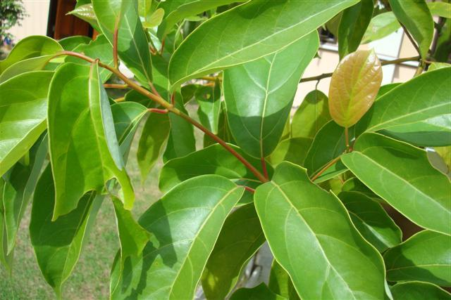

“สมุนไพรไทย” 22 ชนิดเสี่ยงสูญพันธุ์”
นายนันทศักดิ์ โชติชนะเดชาวงศ์ ผู้อำนวยการกองคุ้มครองภูมิปัญญาการแพทย์แผนไทยและพื้นบ้านไทย
กรมพัฒนาการแพทย์แผนไทยและการแพทย์ทางเลือก กระทรวงสาธารณสุข (สธ.) กล่าวว่า
ขณะนี้มีสมุนไพรไทย 22 ชนิด ที่เสี่ยงอาจจะสูญพันธุ์ได้ ประกอบด้วย
1.ถั่วดินโคก
ช่วยขับน้ำ ช่วยขับพิษภายใน แก้คางทูม แก้ฟกบวมตามข้อ ตามกล้ามเนื้อ ช่วยลดไข้ในเด็ก
2.เทพทาโร
แก้อาการปวดท้อง ช่วยขับลมในลำไส้และกระเพาะอาหารให้เรอ ใช้เป็นยาบำรุงธาตุ แก้ปวด รูมาติชึ่ม(น้ำมันเมล็ดเทพทาโร) แก้เสียดท้อง ท้องขึ้น ท้องเฟ้อ
3.มะตูมนิ่ม
ช่วยขับลม ช่วยรักษาอาการท้องเสีย ช่วยลดไข้ แก้อักเสบ ช่วยลดอาการตาบวม
4.มะหาด
เป็นยาขับพยาธิตัวตืดและพยาธิไส้เดือน ทาแก้ผื่นคัน แก้ลม แก้ท้องอืดเฟ้อ แก้กษัย แก้เส้นเอ็นพิการ แก้เบื่ออาหาร
5.เร่ว
แก้ไข้ แก้ริดสีดวงทวาร แก้หืดไอ ช่วยขับเสมหะ แก้ระดูขาว
6.หัวร้อยรู
ใช้บำรุงหัวใจ แก้โรคปอด ช่วยขับชีพจร แก้ปวดศีรษะ แก้พิษในข้อในกระดูก
7.กระทุ่มนา
ลดความดันโลหิตและออกฤทธิ์กดต่อประสาท และกล้ามเนื้อช่วยลดไข้ รักษาโรคผิวหนังทุกชนิด แก้มะเร็งคุดทะราด
8.ขันทองพยาบาท
แก้น้ำเหลืองเสีย แก้โรคผิวหนัง แก้ไข้ แก้พิษในกระดูก แก้มะเร็งคุดทะราด
9.จุกโรหินี
แก้บิดมูกเลือด ช่วยคุมธาตุ แก้ไข้จากลำไส้อักเสบ แก้ไข้พิษ แก้พิษทำให้ร้อน
10.ชะเอมไทย
แก้โรคในลำคอ แก้ลม แก้เลือดออกตามไรฟัน บำรุงธาตุและบำรุงกำลัง บำรุงกล้ามเนื้อให้เจริญ
11.ชิงชี่
แก้ไข้เพื่อดีและโลหิต ใช้แก้ไข้ร้อนภายในทุกชนิด แก้ไข้กาฬ แก้ไข้พิษ ช่วยกระทุ้งพิษไข้
12. ตับเต่า
ใช้เป็นยาระบาย แก้ไอ ช่วยขับเสมหะ แก้ประดง แก้หืด
13.นางแย้มป่า
เป็นยาแก้ไข้ ช่วยรักษาลำไส้อักเสบ ช่วยขับปัสสาวะ แก้ไตพิการ ใช้ขับระดูในสตรี
14.ปลาไหลเผือก
ถ่ายพิษต่างๆ ถ่ายฝีในท้อง ถ่ายพิษไข้พิษเสมหะ และโลหิต แก้ไข้ แก้ไข้มาลาเรีย แก้ลม
15.พังคี
ก้อาการจุกเสียด แก้ท้องอืด ท้องขึ้น ท้องเฟ้อ ปวดท้อง วดแน่นท้อง
16.มะคังแดง
แก้เลือดลมเดินไม่สะดวก แก้ปวดท้อง เปลือกต้นตำพอกแผลสดห้ามเลือด
17.สะค้าน
แก้ลมอัมพฤกษ์ แก้ลมในทรวงอก ขับลมในลำไส้ ใช้เป็นยาบำรุงกำลัง แก้ไข้
18.สารภีป่า
บำรุงหัวใจ บำรุงกำลัง บำรุงเส้นประสาท แก้โลหิตพิการ แก้ไข้มีพิษร้อน
19.อบเชยไทย
ดื่มแก้ตับอักเสบ อาหารไม่ย่อย แก้ท้องเสีย ลำไส้เล็กทำงานผิดปกติ ขับพยาธิ มีสรรพคุณบำรุงดวงจิต แก้อ่อนเพลีย
20.เฉียงพร้านางแอ
ใช้แก้โลหิตปิดธาตุ แก้ไข้ ช่วยขับเสมหะ แก้ร้อนในกระหายน้ำ แก้บิด
21.เถาเอ็นอ่อน
ใช้เป็นยาฟอกเลือด ช่วยทำให้จิตใจชุ่มชื่น เป็นยาขับลมในลำไส้และในกระเพาะอาหาร ทำให้ผายและเรอ ช่วยแก้อาการจุกเสียดแน่นท้อง เป็นยาบำรุงเส้นเอ็น
22.เปราะหอม
แก้หวัดคัดจมูก ขับลมในลำไส้ แก้เสมหะ เจริญไฟธาตุ แก้ลงท้อง แก้ท้องเฟ้อ แก้กำเดา
อ้างอิงMGR Online